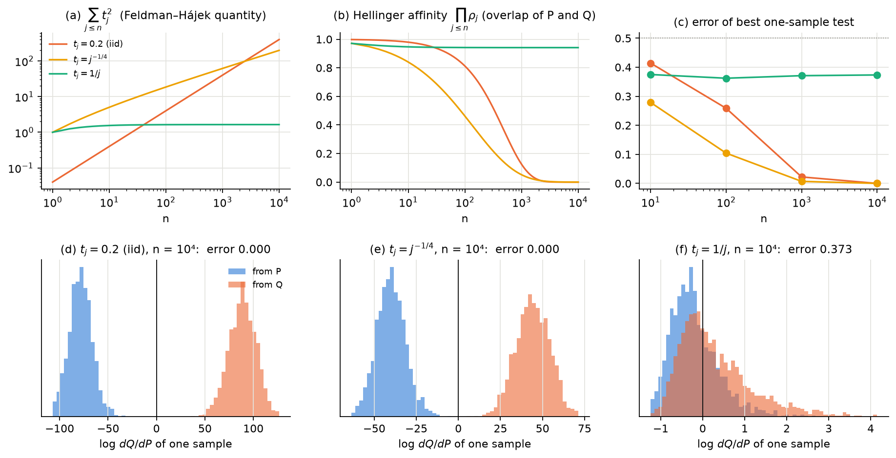
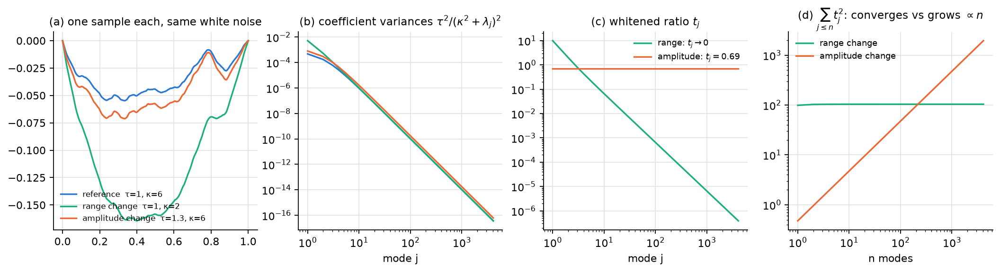
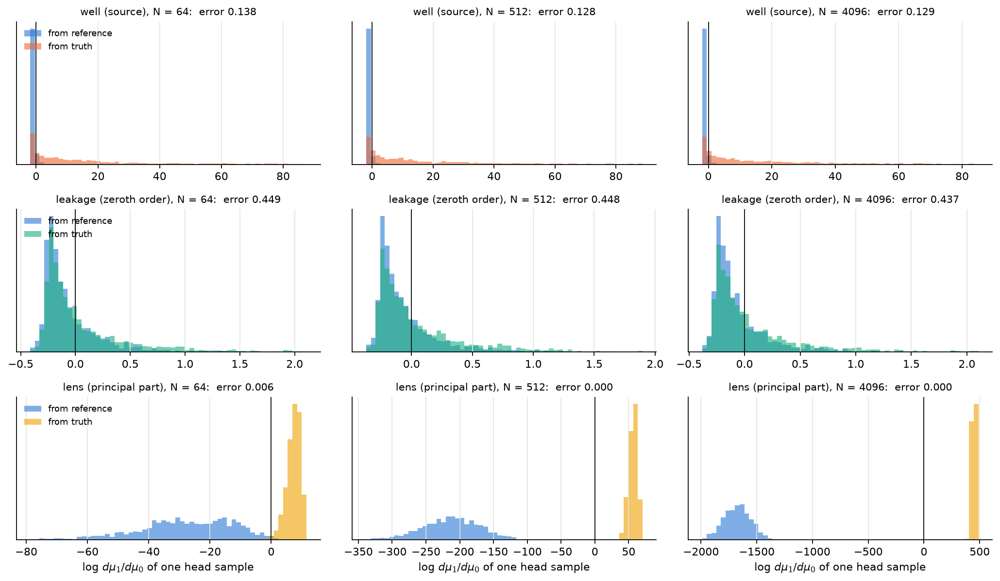

When is a Gaussian prior “the same kind of thing”?
Computational notes on the Feldman–Hájek theorem and what it means for building priors for groundwater heads: which nonstationary features (wells, leakage, a conductivity lens) can be added as a correction to a stationary SPDE prior, and which force the operator itself to change.
Two Gaussian measures are equivalent iff a single, infinitely resolved sample cannot tell them apart. If one perfect sample can, they are mutually singular.
Chapter 1 · Feldman–Hájek and measure equivalence
| Step | What the computation shows |
|---|---|
| Finite dimensions | Non-degenerate Gaussians are always equivalent; singularity needs a degenerate support. |
| Infinitely many coordinates | A 20% variance change in every coordinate becomes perfectly detectable from one sample; equivalence holds iff Σ tj2 < ∞ (Kakutani). |
| Mean shifts | Equivalent iff the shift lies in the Cameron–Martin space; for the SPDE prior that is H², so a point well is singular. |
| Range vs amplitude | Changing the range κ looks dramatic but is equivalent; changing the amplitude τ looks mild but is singular. One sample pins τ, never κ. |
| 1D leaky aquifer | Well and leakage: ‖T‖ flat under refinement. Conductivity lens: ‖T‖ ∝ √N, and one head field identifies it. |



Coming next
Whitening and the operator T in 2D; why a conductivity lens acts as multiplication by K⁻² − 1; how a finite-rank model sees T through sample covariances (Marchenko–Pastur, BBP); centred vs non-centred MCMC.